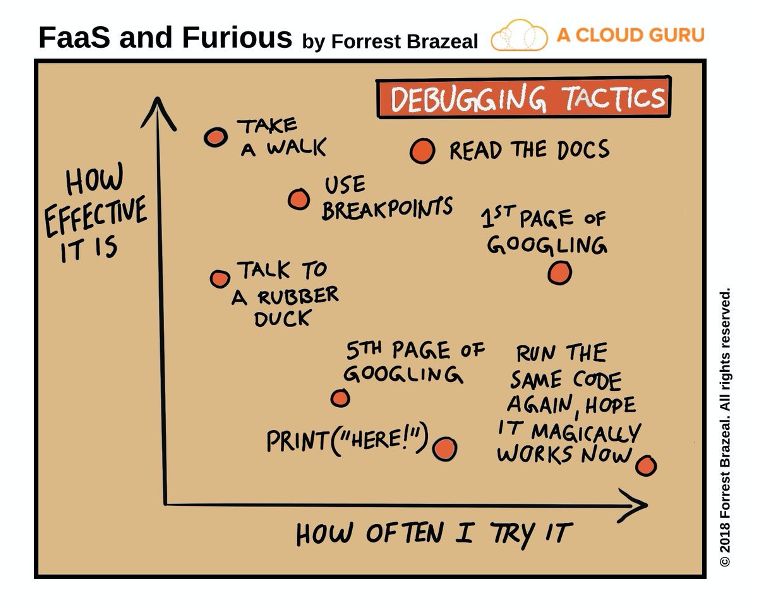

Getting Oriented
Jon Reades
Key information to get you started…
| Module Lead | Contact |
| Dr. Jon Reades (he/him) | j.reades[at]ucl.ac.uk + Slack |
| PGTAs | |
| Philip Wilkinson Maurice Glucksman Francesco Terenzi Andrew Renninger | Slack |
How We Are Running Things…
Your input will guide the class!
- Preparation: readings, pre-recorded lectures, quizzes/feedback.
- Classes: discussing readings and lectures; discussing questions and issues arising from the previous week’s practical, and ‘live coding’ in an I do/We do format.
- Practical: working through a weekly ‘programming notebook’ in a small group with support from your PGTA.
Assessments (Logic)
- Teach and test the most challenging aspects of data science ‘work’ without mastery of Python.
- Discover transferrability of skills and tools across projects, disciplines, and industries.
- Build on content from QM (e.g. setting quantitative research questions) and GIS (e.g. spatial statistics).
- Develop experience with non-academic research formats and writing.
Assessments (Details)
- Data Audit (30% of module grade; 1,050 words max): A structured individual essay in which students are prompted to draw on the assigned readings to critically engage with the assigned data set. It should be seen as an opportunity to begin integrating the technical and theoretical elements of the module.
- Data+Policy Briefing (50% of module grade; 2,500 words max): A two-part small-group submission in which students develop and write up an analysis of the assigned data set so as to inform public policy/political decision-making.
- Individual Reflection (20% of module grade; 1,000 words max): A structured individual reflection in which students are asked to reflect on their experience of working as part of a data analytics team in order to identify behaviours and practices that helped/hindered the project.
How to ‘Ace’ the Assessments?
> Study like you’re learning a new language. Do the readings. Talk to other students (especially in your group). Ask for help when you need it!
Where Does FSDS Fit?
- Geographic Information Systems (GIS)
- Foundations of spatial analysis
- Working with geo-data
- Quantitative Methods (QM)
- Foundations of statistical analysis
- Working with data
- Foundations of Spatial Data Science (FSDS)
- Foundations of applied spatial and statistical analysis
- Integrating and applying concepts from GIS & QM to a problem
- Developing programming and practical analysis skills
- Seeing the ‘data science’ pipeline from end to end
What Are We Trying to Do?
This class hopes to achieve four things:
- To teach you the basics of how to code in Python.
- To teach you the basics of how to think in Python.
- To teach you how to engage with data critically.
- To help you integrate concepts taught across Term 1 and prepare you to apply them in Term 2.
These skills are intended to be transferrable to post-degree employment or research.
Overall Structure
- Part 1: Foundations: Weeks 1–4 to covering the ‘basics’ and setting out a data science workflow.
- Part 2: Data: Weeks 5–7 looking at the same data through three lenses.
- Part 3: Analysis: Weeks 8–10 making sense of the data by building on concepts covered in QM and GIS.
Also…
We hope to convince you t-hat:
- Anyone—and this includes you—can code.
- Learning to code does not require mathematical ability.
- Learning to code does not require linguistic ability.
- Learning to code does require practice. And more practice. And more again.
Consequences…
- If you only code during the practical session then you will not learn how to code.
- If you cram the night before then you will not learn how to code.
- If you practice for 45 minutes a day then you will learn how to code.
A Bit of Perspective
Students face the risks of the de-skilling of geography and planning at one end, and being subsumed by data science at the other…
The Challenges
- Different style of learning from what you might be used to (“I didn’t anticipate, or rather factor into my schedule, the amount of out-of-hours practice that was required to stay up to date.”).
- Doing stats and programming at the same time and connecting this all back to the bigger picture.
- Delayed gratification (you have to walk before you can run).
- Easy to fall behind, but hard to catch up (“the pace is relentless”).
The Rewards
- Skills that are highly transferrable and highly sought-after professionally.
- Problem-solving and practical skills that are valued by the private and public sectors.
- A whole new way of seeing the world and interacting with it.
- Lots of support along the way… if you remember to ask for it!
See this thread on moving from academia to data science.
The Implications
You will learn to code best if you treat it like learning a new language:
- Start simple and work up.
- Google is your friend (really).
- Talk with your friends (i.e. Slack).
- Immerse yourself and practice regularly.
- Do the readings even if we don’t address them specifically.
- Learn how to ask questions (i.e. Search Stack Overflow).
- Subscribe to a ‘magazine’ or two (e.g. Medium or Pocket).
Getting Help
Study Aids
When you need an answer right now:
When you want to learn more:
Study ‘Right’
I’ve tried to throw together some ideas on how you can study effectively that covers things relating to managing distractions when you’ve only got limited time, as well as how to read and how to think.
There’s also useful ideas on how to get help that covers things like ‘how to get a reply from your Prof’ and ‘where to look for help’.
Before You Ask for Help
From the Computer Science Wiki:
- Draw a picture of the problem
- Explain the problem to a rubber duck, teddy bear or whatever (really!)
- Forget about a computer; how would you solve this with a pencil and paper?
- Think out loud
- Explain the problem to a friend
To which I would add:
- Use
print(variable)statements liberally in your code!
Where to Ask for Help
There is no shame in asking for help. None. We are here to support your learning and we have chosen a range of tools to support that:
- Slack: use public
#fsdschannel for help with coding, practical, and related course questions. - Drop-in Hours: Wednesdays @ 3:00–3:45pm (always good to message me in advance).
- Out-of-Hours: use email to raise personal circumstances and related issues for focussed support. Make use of Professional Services support as-needed to preserve privacy and for Extenuating Circumstances.
When to Ask for Help
- When you get warning messages from your computer’s Operating System.
- When you cannot get the coding environment to run at all.
- When even simple commands return line after line of error code.
- When you have no clue what is going on or why.
- When you have been wrestling with a coding question for more than 20 minutes (but see: How to Ask for Help!)
How to Ask for Help
I liked the “How to ask programming questions” page provided by ProPublica:
- Do some research first.
- Be specific.
- Repeat.
- Document and share.
If you find yourself wanting to ask a question on Stack Exchange then they also have a guide, and there are plenty of other checklists.
Learn from Your Mistakes
One More Thing…
You will get things wrong. I will get things wrong.
We will assume that you are trying your best. Please assume the same about us!
It’s going to be messy, but I’m really excited about it!
And Finally…
Do not allow your computer to auto-update during term. Inevitably, major upgrades will break developer tools. Do this by choice only when you have time.
Additional Resources
- See the GIS&T Body of Knowledge (BoK) for quick overview of concepts, techniques, and tools: gistbok.ucgis.org.
- A degree of ‘plagiarism’ is acceptable in code since that’s how we learn; however, mindless copy+pasting of Stack Overflow code leads to sphagetti and, often, incorrect results or difficult-to-squash bugs. Think of it like paraphrasing.
- To distinguish between plagiarism and paraphrasing here’s a nice tutorial that you can also use to help you with your ‘regular’ writing.
Thank you!
Getting Oriented • Jon Reades